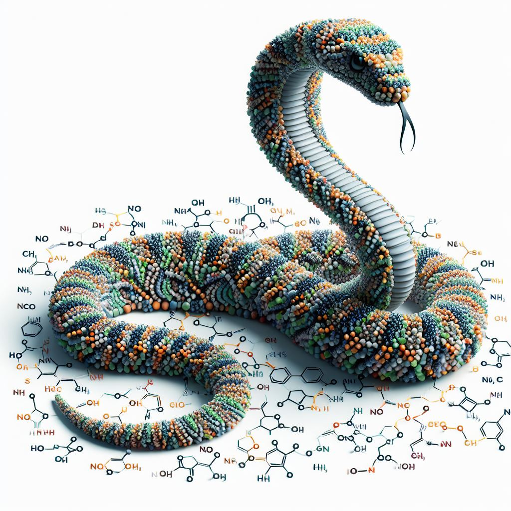

ProtMamba
A Homology-Aware but Alignment-Free Protein State Space Model: ProtMamba is a novel protein language model designed to facilitate protein design. Unlike traditional models that rely on multiple sequence alignments (MSAs) to capture evolutionary information, ProtMamba uses a homology-aware yet alignment-free approach, avoiding the imperfections associated with MSAs.

Introduction
ProtMamba is based on the Mamba architecture, a state space model that efficiently handles very long sequences. The model uses a fill-in-the-middle (FIM) training objective, combining autoregressive modeling and masked language modeling to predict amino acids conditioned on the given context sequences. This makes ProtMamba particularly well-suited for generating novel protein sequences, filling in specific regions of sequences, and predicting the fitness of protein variants.
Features
- Homology-Aware but Alignment-Free: Captures evolutionary information without relying on MSAs and use it to condition the generation process.
- Efficient Long-Context handling: Uses Mamba blocks to handle long sequences with linear memory scaling.
- Different training objective: Combines autoregressive and masked language modeling through a fill-in-the-middle objective.
- Sequence-level positional embeddings: Enhances the model’s ability to reason about in-sequence dependencies and allow for precise inpainting.
Applications
- Sequence Generation: Generate novel protein sequences from scratch conditioned on specific homologs.
- Sequence Inpainting: Fill in specific masked regions within a sequence for targeted protein design.
- Fitness Prediction: Predict the probability distribution of mutations to assess the functional impact of variants.
Repository Structure
configs/: Configuration files for model training and evaluation.
data/: Example dataset.
nbs/: Implementation of the ProtMamba model architecture in jupyter notebooks.
ProtMamba_ssm/: Implementation of the ProtMamba model architecture.
tests/: Scripts to sample from ProtMamba and evaluate the model’s performance.
Model weights
The model weights are available in
Install Repository
pip install -e .How to tokenize all your MSAs to make a training dataset
IMPORTANT: the sequences should be in a3m files but they do not need to be aligned.
import pickle
msa_paths = {"name-of-msa" : "../data/example_msa.a3m"}
# path saving directory
filepath = input("What is the path to the folder where you want to save the dataset?") # example: "../data/"
dataset_name = input("How do you want to name the dataset file?") # example: "encoded_MSAs_train.pkl"
dataset_dictionary = {}
for msa_name, msa_path in msa_paths.items():
# Load an a3m file with all the context sequences
msa = load_from_file(msa_path)
# Tokenize the sequences and concatenate them into a single array
tokens = tokenizer(msa, concatenate=True)
tokens = tokens.numpy()[0]
dataset_dictionary[msa_name] = tokens
with open(filepath+dataset_name, "wb") as f:
pickle.dump(dataset_dictionary, f)How to train
import yaml
if int(use_one_gpu) >= 0:
print(f"Using gpu {use_one_gpu}")
print("Number of gpus used: ", torch.cuda.device_count())
# Load the default config file (change it and add the path to the training dataset)
with open("../configs/default_config.yaml", "r") as file:
defaultconfig = yaml.safe_load(file)
namedir = input("Enter name of directory to save results: ")
finetune_path = input("If you want to finetune a model, enter the relative path to the model's checkpoint, otherwise press enter:")
finetune_path = finetune_path if finetune_path else None
# Run the trainer with the selected training configuration
trainer = run(defaultconfig, namedir, finetune_model_path=finetune_path)How to sample from a pretrained model
use_custom = input("Do you want to use a custom MSA? (y/n): ")
if use_custom == "y":
# Load an a3m file with all the context sequences
msa = load_from_file("../data/example_msa.a3m")
target_sequence = msa[:1]
context_msa = msa[1:]
# Tokenize the sequences and concatenate them into a single array
target = tokenizer(target_sequence, concatenate=True)
tokens = tokenizer(context_msa, concatenate=True)
fim_gen = input("Do you want to generate using FIM? (y/n): ")
if fim_gen=="n":
# AUTOREGRESSIVE, no-FIM generation
# generate the full sequence autoregressively starting from residue 10 in the sequence `target`
gen_dictionary = {"<cls>": 10}
input_seq, targ_pos = prepare_target(target, use_fim={"<cls>": 10})
if fim_gen=="y":
# FIM generation
# mask_dictionary is a dictionary of the positions in the sequence that you want to mask, in this example there will be
# - a mask that covers the residues 4,5,6 and the model will fill it by sampling 10 residues
# - a mask that covers the residues 30,31,32,33,34 and the model will fill it by sampling 3 residues
mask_dictionary = {"<mask-1>": ((4,7),10),"<mask-2>": ((30,35),3)}
input_seq, targ_pos, is_fim_dict = prepare_target(target, use_fim=mask_dictionary)
context_tokens, context_pos_ids = prepare_tokens(tokens,
target_tokens=input_seq,
target_pos_ids=targ_pos,
DatasetClass=Uniclust30_Dataset,
num_sequences=50,
fim_strategy="multiple_span",
mask_fraction=0.2,
max_patches=5,
add_position_ids="1d")
if use_custom == "n":
is_fim = input("Do you want to use FIM? (y/n): ")
filepath = input("What is the path to the folder with the dataset?")
is_fim = True if is_fim == "y" else False
# Load the dataset used for training
dataset_name = input("What is the name of the dataset file?") # example: "encoded_MSAs_subset-100.pkl", "encoded_MSAs_train.pkl"
fim_strategy = "multiple_span" if is_fim else "no-scramble"
dataset = Uniclust30_Dataset(filename=dataset_name,
filepath=filepath,
sample=False,
mask_fraction=0.2,
fim_strategy=fim_strategy,
max_position_embeddings=2048,
add_position_ids="1d")
# Select a sample of the dataset to be the input
data = dataset[1]
tokens = data["input_ids"][None,:].to("cuda")
pos_ids = data["position_ids"][None,:].to("cuda")
model_name = input("What is the path to the folder with the checkpoint of the model?") # example: "results/train_100M_FIM_restart-spikes_merged/checkpoint_131k-750"
# Load pretrained model
model = load_model(model_name,
model_class=MambaLMHeadModelwithPosids,
device="cuda",
dtype=torch.bfloat16,
checkpoint_mixer=False # Must be False when using model for Inference
)Generate new sequences starting from a custom MSA
print("Number of tokens in the MSA (target, context): ", len(input_seq[0]), ",", len(tokens[0]))
print("Target:")
print("sequence:", decode_sequence(input_seq[0].numpy()))
print("original sequence:", decode_sequence(target[0].numpy()))
print("pos ids:", list(targ_pos[0].numpy()))
print("Context:")
print("sequence:", decode_sequence(context_tokens[0].numpy()))
print("pos ids:", list(context_pos_ids[0].numpy()))
print("Mask positions:", is_fim_dict)# Generate the new sequence
output = generate_sequence(model,
context_tokens,
position_ids=context_pos_ids,
is_fim=is_fim_dict,
max_length=20000,
temperature=1.,
top_k=3,
top_p=0.0,
return_dict_in_generate=True,
output_scores=True,
eos_token_id=AA_TO_ID["<cls>"],
device="cuda")
input_seq, output_seq = output["input"], output["generated"]
logits = output["scores"]
print(f"All input context (len = {len(input_seq[0])}):\n", input_seq[0])
print("Last sequence where the masked parts should be predicted:\n", input_seq[0].split("<cls>")[-1])
print(f"Generated (len = {len(output_seq[0])}):\n", output_seq[0])
input_continuation = decode_sequence(target[0].numpy())+"<cls>"
print(f"Continuation of input:\n", input_continuation)
print(f"\nLogits (shape = {logits.shape})")Generate new sequences using the Dataset and by filling in the masked parts (FIM)
context_tokens, context_pos_ids, tokens_fim, pos_ids_fim, is_fim_dict = prepare_dataset_for_fim_generation(tokens, pos_ids)
print("Length of context information", context_tokens.shape[1])
print("Masked part of the sequence to predict and its position indices:\n", tokens_fim, "\n", pos_ids_fim)
print("Masked tokens and their positions in the input sequence:", is_fim_dict)# Generate the new sequence
output = generate_sequence(model,
context_tokens,
position_ids=context_pos_ids,
is_fim=is_fim_dict,
max_length=1570,
temperature=1.,
top_k=3,
top_p=0.0,
return_dict_in_generate=True,
output_scores=True,
eos_token_id=AA_TO_ID["<cls>"],
device="cuda")
input_seq, output_seq = output["input"], output["generated"]
logits = output["scores"]
print(f"All input context (len = {len(input_seq[0])}):\n", input_seq[0])
print("Last sequence where the masked parts should be predicted:\n", input_seq[0].split("<cls>")[-1])
print(f"Generated (len = {len(output_seq[0])}):\n", output_seq[0])
input_continuation = decode_sequence(tokens_fim[0].cpu().numpy())+"<cls>"
print(f"Continuation of input:\n", input_continuation)
print(f"\nLogits (shape = {logits.shape})")total = len(tokens_fim[0])+1
if total>4:
fig, axs = plt.subplots(total//4,4, figsize=(20,5*total//4))
else:
fig, axs = plt.subplots(1,total, figsize=(20,total,5))
axs = axs[None,:]
for el in range(total):
ax = axs[el//4,el%4]
ax.bar(np.arange(logits.shape[-1]),
torch.softmax(torch.from_numpy(logits[0,el,:]), dim=0))
ax.axvline(output["generated_tokens"][0][el], color="red", label="Prediction: "+ID_TO_AA[output["generated_tokens"][0][el]] + f" ({output['generated_tokens'][0][el]})", linewidth=0.5)
# ax.axvline(tokens_fim[0,el].cpu().numpy(), color="k",label="Original: "+ID_TO_AA[tokens_fim[0,el].cpu().numpy()] +f" ({tokens_fim[0,el].cpu().numpy()})", linewidth=0.5)
ax.legend()
fig.suptitle(f"Real sequence: {input_continuation}\nPred sequence: {output_seq[0]}")
plt.show()Generate new sequences using the Dataset and by sampling amino acids autoregressively from <cls>
# Generate the new sequence
L = 650#628#
output = generate_sequence(model,
tokens[:,:L],
position_ids=pos_ids[:,:L],
is_fim=False,
max_length=1570,
temperature=1.,
top_k=10,
top_p=0.0,
return_dict_in_generate=True,
output_scores=True,
eos_token_id=torch.tensor([AA_TO_ID["<cls>"],AA_TO_ID["<mask-1>"], AA_TO_ID["<mask-2>"], AA_TO_ID["<mask-3>"],
AA_TO_ID["<mask-4>"], AA_TO_ID["<mask-5>"]]).to("cuda"),
device="cuda")
input_seq, output_seq = output["input"], output["generated"]
logits = output["scores"]
print(f"All input context (len = {len(input_seq[0])}):\n", input_seq[0])
print("Last sequence where the masked parts should be predicted:\n", input_seq[0].split("<cls>")[-1])
print(f"Generated (len = {len(output_seq[0])}):\n", output_seq[0])
input_continuation = decode_sequence(tokens[0,L:].cpu().numpy()).split("<cls>")[0]+"<cls>"
print(f"Continuation of input:\n", input_continuation)
print(f"\nLogits (shape = {logits.shape})")
print("\nStops if the model predicts a mask token")fig, axs = plt.subplots(4,4, figsize=(20,10))
for el in range(16):
ax = axs[el//4,el%4]
ax.bar(np.arange(logits.shape[-1]),
torch.softmax(torch.from_numpy(logits[0,el,:]), dim=0))
ax.axvline(output["generated_tokens"][0][el], color="red", label="Prediction: "+output_seq[0][el] + f" ({AA_TO_ID[output_seq[0][el]]})", linewidth=0.5)
ax.axvline(tokens[0,L+el].cpu().numpy(), color="k",label="Original: "+input_continuation[el] +f" ({AA_TO_ID[input_continuation[el]]})", linewidth=0.5)
ax.legend()
fig.suptitle(f"Real sequence: {input_continuation[:16]}\nPred sequence: {output_seq[0][:16]}")
plt.show()